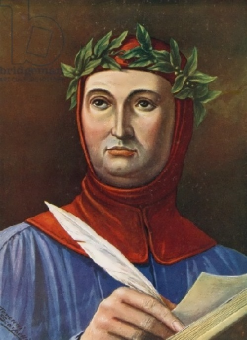
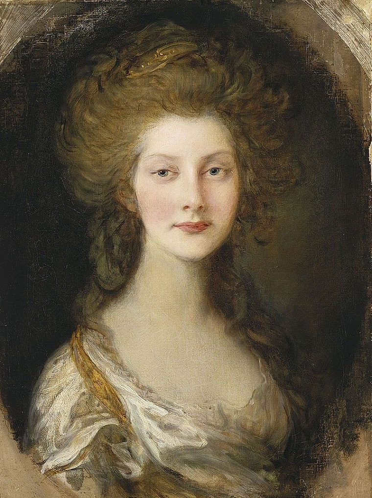

Conhecido como “Lourenço, o Magnífico” Lourenço de Médici foi soberano da República Florentina e um grande mecenas. Dizem que ele comprou as moedas da coleção do Papa Paulo II.
Esse poeta italiano, que é conhecido como o pai do Humanismo, também é tido como o pai da numismática. Ele não só colecionava moedas, mas também estudava o valor histórico delas! Abrindo caminho para inúmeros numismatas que vieram depois
Filha do Rei George III e da rainha Carlota, a princesa Augusta Sofia foi uma criança bastante tímida. Ela não gostava das tensões políticas que surgiram entre seus irmãos mais velhos e seus pais por volta de 1780. Nessa época, quando tinha cerca de 12 anos, a princesa preferiu se ocupar com a sua coleção de moedas. Colecionava moedas inglesas e alemãs.